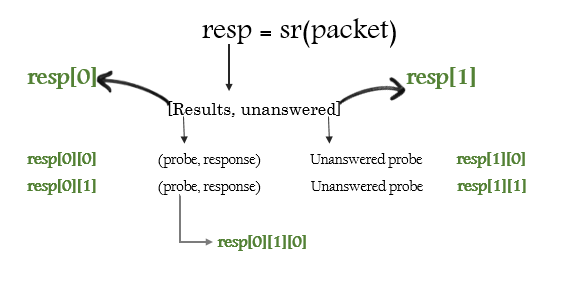

Sending & recieving packets
- Send & recieve funtions are the heart of scapy's functionality.
Fine grained options
Most scapy funtions like send(), sniff() functions has fine grain options like applying bpf filters, timeout, retry, verbosity etc. Use help(function_name) to find out more options.
send()
Send packets at Layer 3(Scapy creates Layer 2 header), Does not recieve any packets.
>>> send(IP(dst="1.2.3.4")/ICMP()) . Sent 1 packets.
sendp()
Send packets at Layer 2(Must provide Layer 2 header), Does not recieve any packets.
>>> sendp(Ether()/IP(dst="1.2.3.4",ttl=(1,4)), iface="eth1") .... Sent 4 packets. >>> sendp("I’m travelling on Ethernet", iface="eth1", loop=1, inter=0.2) >>> sendp(rdpcap("/tmp/pcapfile")) # tcpreplay ........... Sent 11 packets.
sr()
- Sends packets and receiving answers.
- sr() returns a list of tuples of probe and answer in a packet list, and the unanswered packets.
>>> sr(IP(dst="192.168.8.1")/TCP(dport=[21,22,23])) Received 6 packets, got 3 answers, remaining 0 packets (<Results: UDP:0 TCP:3 ICMP:0 Other:0>, <Unanswered: UDP:0 >>> ans,unans=_ >>> ans.summary()


sr1()
- Sends packets and recieves only the first response .
- The function returns a couple of packet and answers, and the unanswered packets.
>>> p=sr1(IP(dst="scanme.nmap.org")/ICMP()/"XXXXXXXXXXX") Begin emission: ...Finished to send 1 packets. .* Received 5 packets, got 1 answers, remaining 0 packets
srloop()
- Sends packets, recieves and displays responses, in a loop .
- The function returns a couple of packet and answers, and the unanswered
>>> packet = IP(dst='192.168.56.102')/ICMP() >>> srloop(packet) RECV 1: IP / ICMP 192.168.56.102 > 192.168.56.1 echo-reply 0 RECV 1: IP / ICMP 192.168.56.102 > 192.168.56.1 echo-reply 0 RECV 1: IP / ICMP 192.168.56.102 > 192.168.56.1 echo-reply 0 ^C Sent 3 packets, received 3 packets. 100.0% hits. (<Results: TCP:0 UDP:0 ICMP:3 Other:0>, <PacketList: TCP:0 UDP:0 ICMP:0 Other:0>)